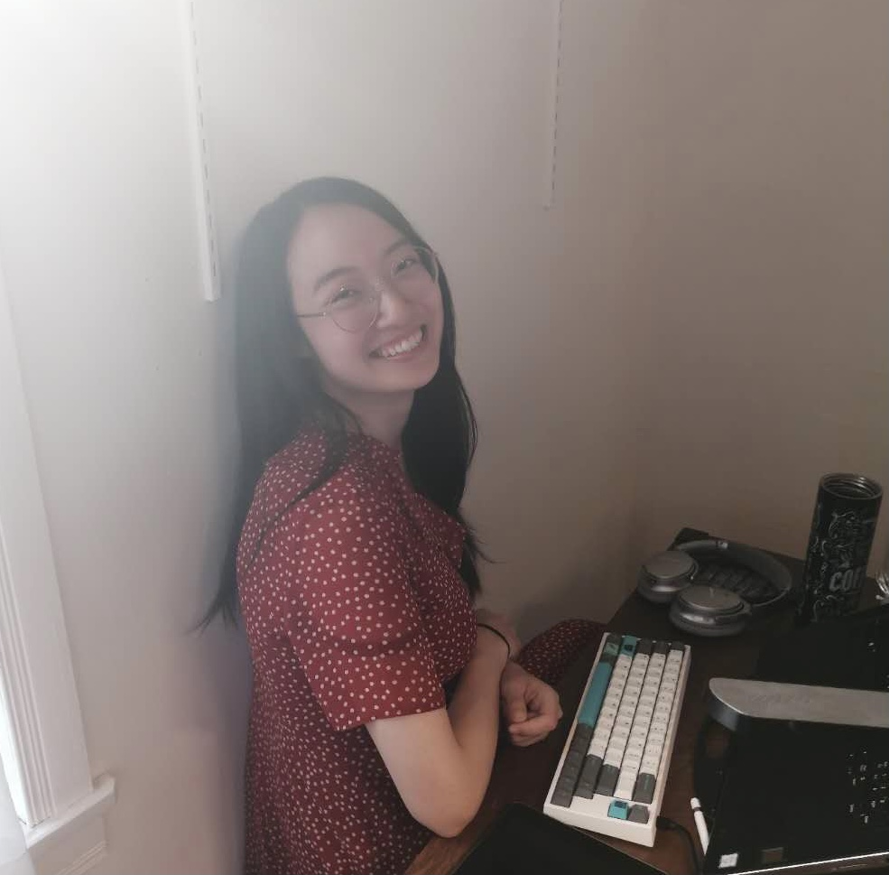

Jueqi Wang
Ph.D. Candidate
Department of Electrical & Computer Engineering
Boston University
Department of Electrical & Computer Engineering
Boston University
Email: jueqiw at bu dot edu

Driven by a passion for understanding and improving human health, I am broadly interested in leveraging existing sensory and biomedical data to enhance well-being, performance, and overall quality of life. I'm currently working at the intersection of imaging and genetics to better understand Autism — specifically, developing methods to address the challenge of missing modalities in multimodal data.
Selected Publications
-
CALM: Interpretable Cross-Modal Alignment for Biomarker Discovery from Unpaired DataJueqi Wang, Zachary Jacokes, John Darrell Van Horn, Kevin A. Pelphrey, Michael C. Schatz, Archana VenkataramanMICCAI 2026
-
Learning Explainable Imaging-Genetics Associations Related to a Neurological DisorderJueqi Wang, Zachary Jacokes, John Van Horn, Michael Schatz, Kevin Pelphrey, Archana VenkataramanMICCAI 2025
-
InverseSR: 3D Brain MRI Super-Resolution Using a Latent Diffusion Model (Early Accept, Top 14%)Jueqi Wang, Jacob Levman, Walter Hugo Lopez Pinaya, Petru-Daniel Tudosiu, M. Jorge Cardoso, Razvan MarinescuMICCAI 2023
Community Outreach
Reviewer: Transactions on Medical Imaging, Medical Physics, MELBA, MIDL 2025, 2026, MICCAI 2025, 2026